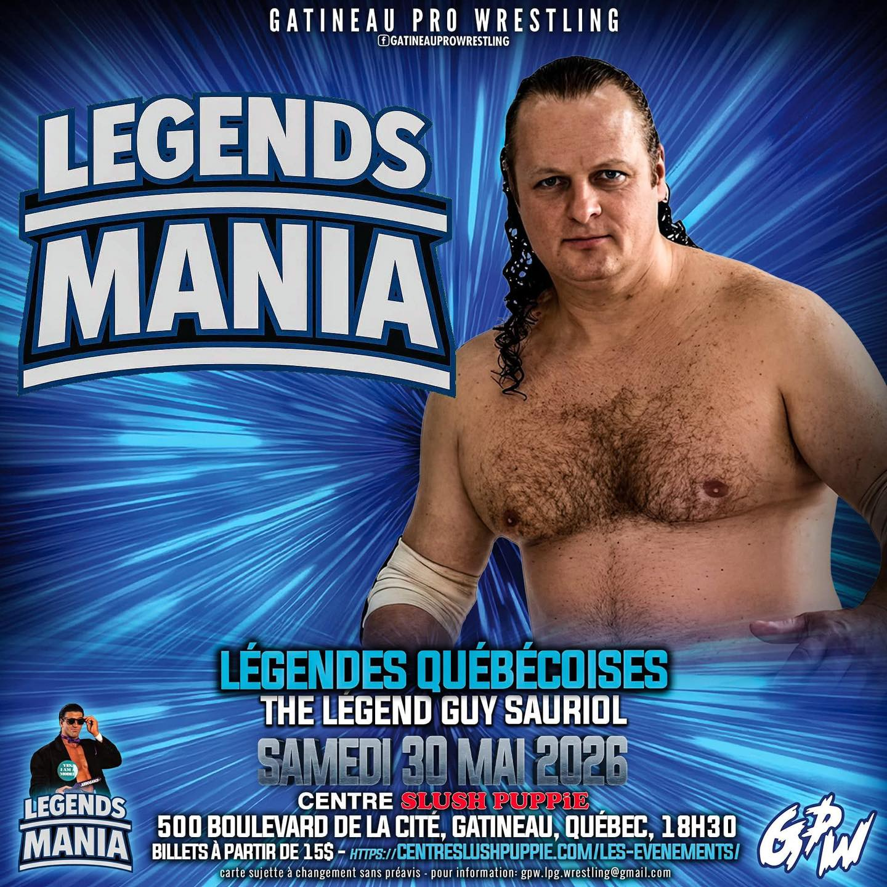

Événement
Guy Sauriol annoncé à Legends Mania 2026
Page dédiée à l’annonce GPW Wrestling de Guy “The Legend” Sauriol parmi les légendes québécoises de Legends Mania 2026 au Centre Slush Puppie de Gatineau.
Annonce GPW Wrestling
GPW Wrestling a annoncé Guy “The Legend” Sauriol parmi les légendes québécoises invitées à Legends Mania, présenté au Centre Slush Puppie à Gatineau le samedi 30 mai 2026 à 18 h 30.
L’annonce le place aux côtés de Gino Brito Sr., Gino Brito Jr. et Wild Dangerous Dan, dans un contexte de rencontres, photos, hommages et souvenirs autour de la lutte professionnelle au Québec.
